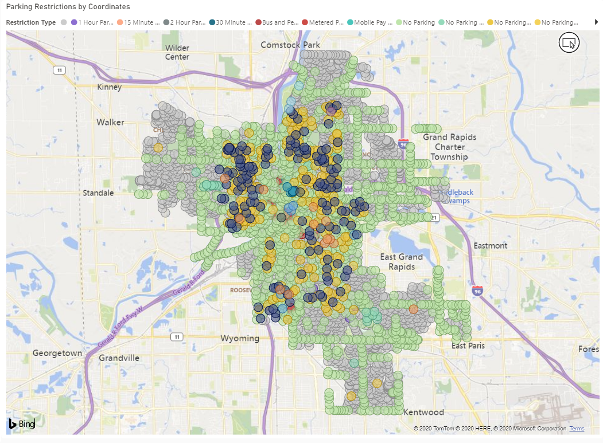
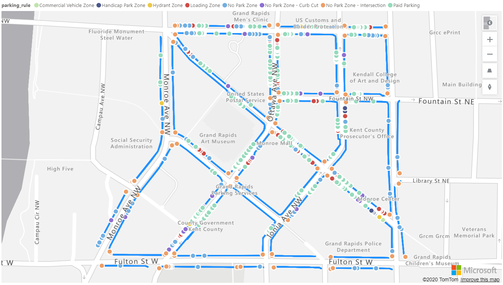

You are viewing Summary view. You can go deeper into the project with this navigation.
Previous article
Ctrl + A
PROJECT
5
/
7
Next article
Ctrl + D
A romanian Data Story
An exploration of Romanian data. Follow the running weekly series on LinkedIn
Creating the Multi-line chart Power BI Custom Visual
Plotting lines on maps in Power BI with the default map visuals is impossible. A typical map where you plot out some spatial data looks like below.
[pic here]
Luckily, ESRI have integrated their powerful ArcGIS map into Power BI and few Power BI developers are aware of what possibilites this opens up.
ArcGIS is a very powerful spatial representation tool. I do not have the expertise to go through all the details of prouct. There is such a thing as a GIS developer and these people work with spatial data and visualization all the time. I'm not one of them. You can check out the ESRI website for more details.
One of the most powerful features of ArcGIS, and the one that we'll use to solve our problem, is that you can create your own map layers. For this, you need to use ESRI's online and free tool.
So let's dive in and see a step-by-step short walkthrough of how to use ArcGIS to add lines on maps and use them in Power BI as in the gif below.
[gif here]
Creating the Multi-line chart Power BI Custom Visual
PowerBI has quite a few mapping options for visualizing geographic data. It can work with latitudes, longitudes, country, city, street names, zip codes.There are currently 5 standard map visualizations available in PowerBI, including the new Azure map.
data analysis
Power BI
PowerBI has quite a few mapping options for visualizing geographic data. It can work with latitudes, longitudes, country, city, street names, zip codes.
There are currently 5 standard map visualizations available in PowerBI, including the new Azure map.
Add to these a few other community maps and whatever maps you can create in D3, R or Python and you’ve got a pretty good selection of maps for your geographic data.
Still, there are a few limitations with the current options – unless you heavily code your custom maps. One of which is the inability to map polylines or linestrings, as they are called, in GeoJSON files. GeoJSON files geometry types are: Point, LineString, Polygon, MultiPoint, MultiLineString, and MultiPolygon – https://geojson.org/.
Mapping points and polygons are fairly easy with the standard maps and community maps.

There are currently 5 standard map visualizations available in PowerBI, including the new Azure map.

Mapping linestrings is not as straightforward and linestrings are really the only correct way of visualizing some geographic data like driving routes or parking spaces.
We recently worked on a project where we needed to map out parking spaces. We explored our no-code options. The first one was the Azure map. We managed to create this map first. What we did? We just added the geojson dataset as a reference layer which mapped out the lines in that sky-blue.
The reference layer is boring, though. It’s just…well…a reference layer. You cannot interact with it, you can’t color it by a legend and you can’t cross-filter it with from slicers or other charts. It’s just a static, albeit correctly charted, image on your map.
After more investigation and still wanting to go no-code we landed on on esri’s arcgis online service. After creating a trial account and fiddling around we managed to create a reference layer that we could customize to our needs. We then realized we had to publish the layer publicly on arcgis so we could then import it as a reference layer in PowerBI.
Like that, we managed to create a better, richer reference layer that:
showed parking capacities by types;
calculated the length of each shape;
you could interact with – click on each shape and see its properties.
You can play around with the map in the embedded report below. The current limitations we found, and they are big, are as follows:
the reference layer still doesn’t interact with other slicers and charts on the page. As far as I understand, the reference layer comes (from arcgis) with its internal dataset that, obviously, doesn’t communicate with your dataset in PowerBI;
on the layer pane, you can’t click on the different categories to highlight or filter them on the map;
you can’t add multiple custom layers on the same map.
This is surely better than nothing, but it still leaves a lot to want. So the search for lines on maps continues and it might be that the only robust option right now is the one you code yourself.
Cookie Consent
By using this website, you agree to the storing of cookies on your device to enhance site navigation, analyze site usage, and assist in our marketing efforts. View our Privacy Policy for more information.
When you visit websites, they may store or retrieve data in your browser. This storage is often necessary for the basic functionality of the website. The storage may be used for marketing, analytics, and personalization of the site, such as storing your preferences. Privacy is important to us, so you have the option of disabling certain types of storage that may not be necessary for the basic functioning of the website. Blocking categories may impact your experience on the website. More Infomartion
These items are required to enable basic website functionality.
Marketing
These items are used to deliver advertising that is more relevant to you and your interests. They may also be used to limit the number of times you see an advertisement and measure the effectiveness of advertising campaigns. Advertising networks usually place them with the website operator’s permission.
Personalization
These items allow the website to remember choices you make (such as your user name, language, or the region you are in) and provide enhanced, more personal features. For example, a website may provide you with local weather reports or traffic news by storing data about your current location.
Analytics
These items help the website operator understand how its website performs, how visitors interact with the site, and whether there may be technical issues. This storage type usually doesn’t collect information that identifies a visitor.